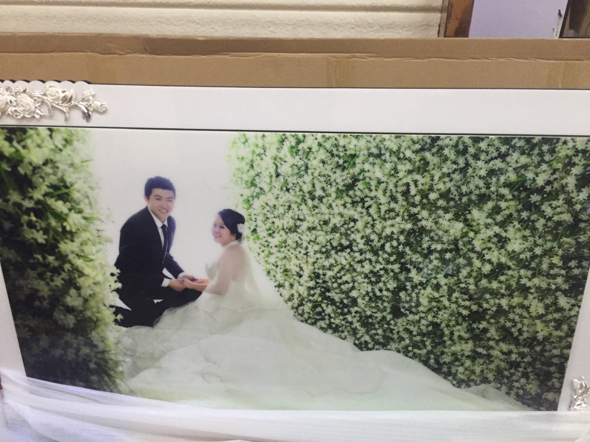

名字:
花小妹
性别:女
介绍:gis，地图制图，二次开发。目标全栈。
问题
答案
新建于:2017-01-03 07:01:39 AM，更新于2017-01-21 12:59:12 AM
Pre上一页
Next下一页
跳页:
正文: 爬上来三更，抓娃娃，这个技巧就是找一家很大娃娃机很多的店，找一台好抓的机器抓空为止。以前打工的地方有娃娃机，那个是可以调节的，单纯地说抓娃娃，这个事只要不斜视，没事什么技巧可言的。
有人说我像孔连顺，我老公像没整容的刘梓晨。好吧。后来刘梓晨坐时光机穿越到自己没整容以前的时光和女神孔连顺结婚了。这个故事大概就是这样。
-------------------以下是第二次补充-------------
爬上来第二次补充，看到好多人问牛肉面，这个牛肉面是我自己做的。以下是制作方法。葱切段，姜切片，蒜整头不剥皮（把外面有土那层剥掉就好了）料酒（啤酒白酒都成），生抽，老抽，甜面酱，大料两朵，冰糖四五块，牛肉切菱形块（稍微肥一点的牛肉，想切方块也成雕花也行）
高压锅放水，放牛肉，（水要没过牛肉一些）开火，别扣盖子，然后水一点点开了不断的会有血沫子冒上来，撇掉血沫，血沫撇净把上面准备的调料都扔进去。扣盖，25-30分钟左右。开盖放盐，味精，煮一会，为了入味，爱吃卤蛋的放几个水煮蛋。牛肉炖好了。你想做牛肉面土豆炖牛肉还是炖个粉条白菜都成。
盛出一部分牛肉，一般我是五六块左右，多放些汤，放在碗里备用。炒锅开火，放一点点的油，放干辣椒（爱吃辣还可以放点灯笼椒，不吃辣以下调料关于辣的都省略）爆香，加入任何辣椒酱里面的红油都成，一般我用老干妈。放入碗里备用的牛肉和汤，加盐和白胡椒粉放点水慢慢熬。这个牛肉汤要拌面条的应该要咸一点的。
清水放入煮锅，煮开，下手擀面或者鲜切面，市场上两块钱一大兜子。按照煮面条步骤煮熟，放点生菜（爱吃油麦菜放油麦菜），生菜一烫就熟。
拿出一个大碗，把面条先捞出来，然后把生菜捞出来，然后可以取一个卤蛋放上面，想对半切开的随便你。把熬着的牛肉和汤直接浇进去，撒点葱花香菜。
开吃。
----------------以下是第一次补充-----------------本来不想撒狗粮，那就放两张老公照片好了。
这是刚谈恋爱一年的时候，那时候还是个小鲜肉，无论是看起来还是摸起来都是萌萌哒。182 138斤。
这是今年夏天回高中拍婚礼用的微电影时候照的，已经开始胖了有小肚子了。这才对嘛，起码对的起吃下去的鸡鸭鱼肉。
这是婚纱照，西装依旧帅帅的。
---------------------以下是原答案-----------------
你们真的知道什么叫胖吗？120就算胖了？140就算胖了？
姑娘我158 155斤 刚称的体重只高不低好不啦。
结婚照，这叫胖好么，那时候大概150斤吧，因为胖连婚纱加两块挡板都穿的很勉强，干脆典礼搞了个唐式的，自己找裁缝自己设计了一个杨贵妃的造型。大拖尾嘛，一样有两米长的大裙摆。伴娘一块穿儒裙。
恋爱之初120斤萌萌哒，齐刘海还算个大胸小萝莉。
谈恋爱以后胖成猪，还是埋没不了洒家的少女心，什么兔子外套水手服一样穿起来。虎背熊腰一概不管。老公形容的就是，肉装琴女，肉装萝莉，肉装瑞文。
正脸无妆无刘海无修图全身照。老公比较高，所以大概有45度显瘦的效果。那些娃娃都是洒家亲手抓的。
胖怎么了，一样可以找到很好很温柔很帅气的老公。一样生活的很幸福。放在唐代那些蛇精脸都得是渣渣，洒家如此体重的才是正宫。但是考虑到孩子，以后怀孕前还是打算减一些。
来，诸位英雄，干了这碗牛肉面，来世还做胖美人。
Pre上一页
Next下一页
跳页: